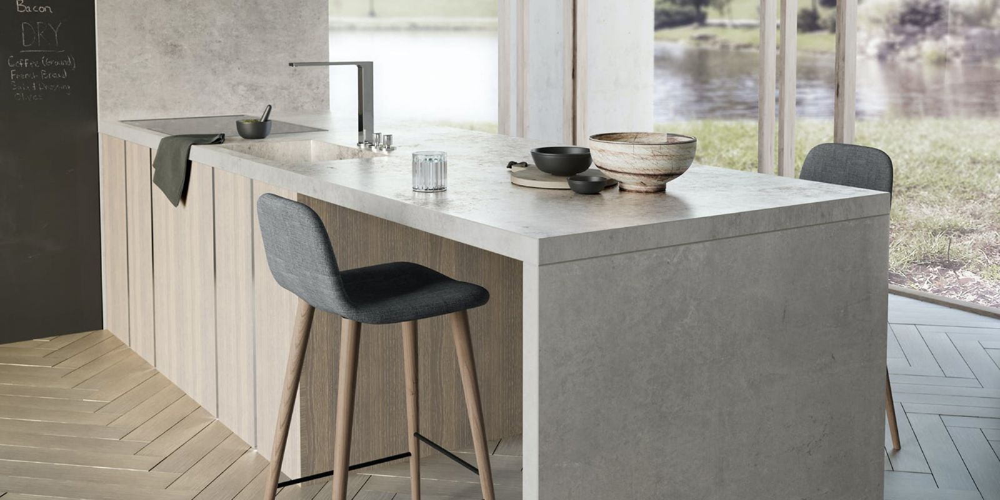
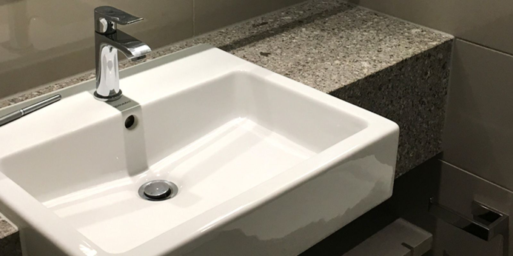
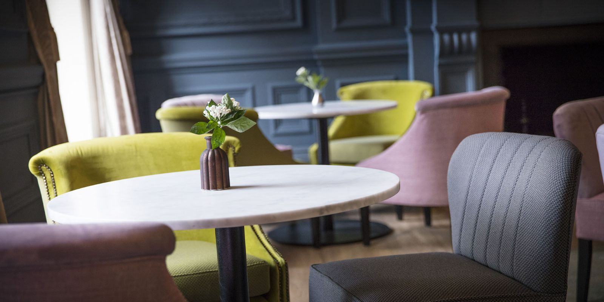
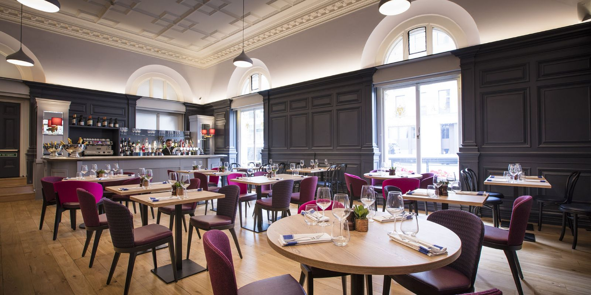
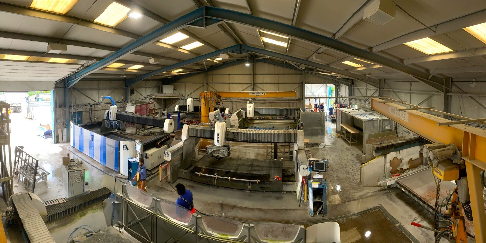
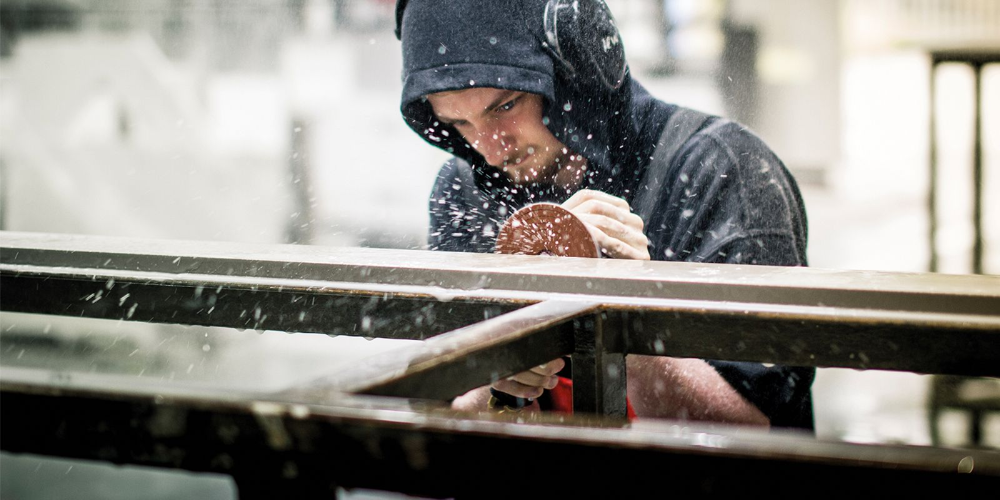

Kitchens
Worktops, islands, waterfall ends, upstands, splashbacks and sink cut-outs.
Made in Fife · Fitted across Scotland
Kitchen worktops, islands, vanity tops and bar tops for homes and businesses in Dumfries, Annan, Lockerbie and the rest of Dumfries & Galloway.
Recent jobs
Materials
Tap a material to see its colours, how it wears and examples of finished worktops.
What we make

Worktops, islands, waterfall ends, upstands, splashbacks and sink cut-outs.

Vanity tops, wall cladding and shower enclosures.

Bar tops, reception desks, table tops and hotel vanities.

Dining and coffee tables, hearths and thresholds, often from offcuts.
Watch
One of our fits, filmed from start to finish.
Get a quoteHow it works
Use the form or call 01592 654386. We'll talk through material, edges and cut-outs and send a price.
Once your units are in, we measure on site with a digital templating system: no board templates, no mess.
Your worktops are cut on computerised machinery in our Kirkcaldy workshop, then finished by hand.
Our own fitters install them, cut-outs and all.


Reviews
“Thanks for the continued help and the professional manner that your team carried out their work. Please pass on our regards to all your staff involved, for the beautiful end result they produced. Well done.”
Forgan Smithy House, Newport-on-Tay
“We are very pleased with your service. Worktop arrived and fitted without delays. After discovering a mark on the worktop, this was dealt with efficiently and we are very satisfied. We will recommend your company to relatives and friends.”
Mr & Mrs Grant
“I am pleased to confirm that we successfully opened Grosvenor Arms and Tea Rooms to the public today, on programme as planned. This was a result of some great work from the team.”
Chris Jones, London Grosvenor
Areas we cover
Dumfries & Galloway is one of our longer runs, so we book templating and fitting around your kitchen installation date and keep the visits to a minimum. From farmhouses and steading conversions to holiday cottages on the Solway coast, you get the same team and the same finish as customers on our doorstep.
Rough measurements or a kitchen plan are enough to get started.